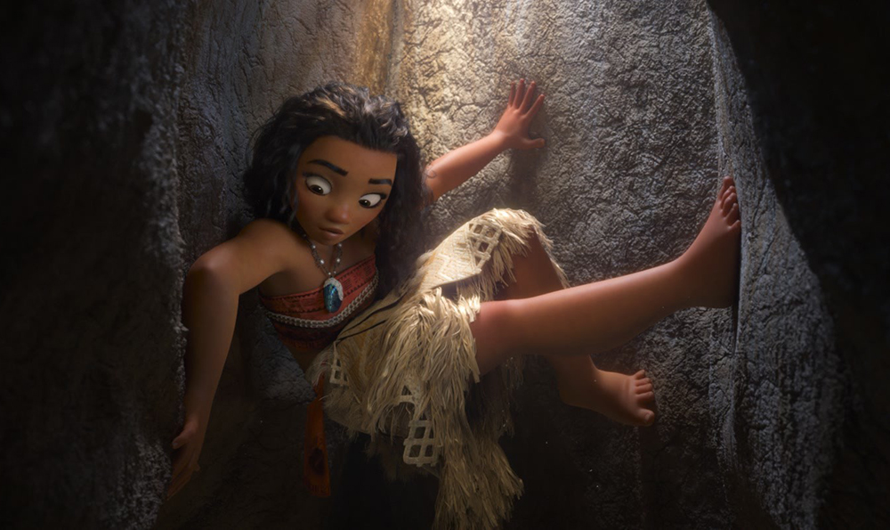
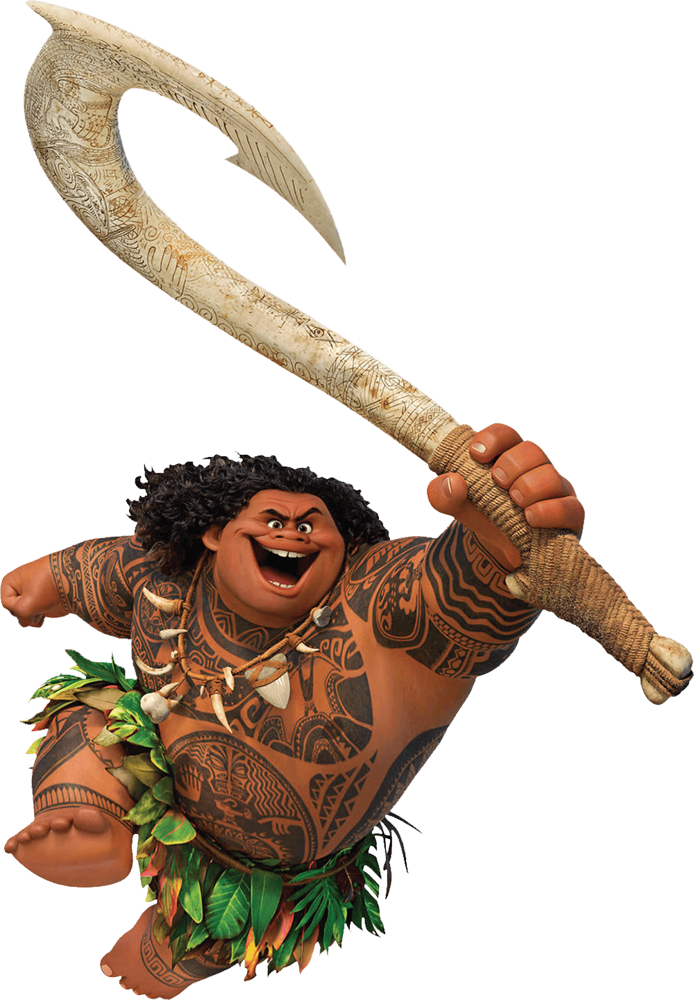

Moana is the vibrant, tenacious and optimistic daughter of the Chief of Motunui, thriving on her island but drawn to the ocean. When her island is threatened by a dark force, Moana sets sail outside the reef and her comfort zone to right a wrong, save her people, and find the answers she's been searching for her whole life.
Moana, as Gramma Tala describes, "stands out from the crowd". She is sea-loving, headstrong, strong-willed, practically fearless, and physically capable. Though she has moments of self-doubt, she has great pride in who she is, and is generally too stubborn to back away from new challenges.
Moana approaches new experiences and tasks with the utmost seriousness and will stand her ground to fight for what she values even when all seems lost. She can present herself as an imposing force despite her size and has bested the most fearsome beasts and impossible obstacles across the seas of Oceania while relying almost solely on her own intelligence.
As such, she was able to bring her two loves together, ultimately recreating and honoring what came before her: a unity between her people and the sea.


maui
Maui was born to human parents, centuries before the events of the film. Apparently wanting nothing to do with their son, Maui's parents threw him into the sea as an infant, and left him for dead. He was saved by the gods, who raised Maui, granting supernatural abilities, immortality, and a magical fish hook that allows him to shapeshift.
Despite his demigod status, Maui's cruel upbringing would forever scar him. Feeling rejected by humans, he used his powers to benefit mankind in any way they pleased as a means to earn the love and validation that he was denied by his parents; he pulled islands from the sea to provide them with homes, extended their days by pulling back the sun, and stole fire from the bottom of the earth to provide them with warmth on cold nights, among many feats. As a result, Maui became one of the most acclaimed figures of Oceania history.
As the people acclimated to Maui's gifts, he had to perform increasingly grand feats to sustain their adulation. This led him to steal the heart of Te Fiti, the mother island.
The heart would remain lost for centuries, while Maui's fishhook eventually fell into the possessions of his arch-rival, the giant crab Tamatoa.
pua
Pua is Moana's loyal pet pig with puppy energy and an innocent puppy brain. Despite being a pig, Pua typically acts like a puppy. He is perhaps Moana's biggest supporter.
heihei
Heihei is one dumb rooster—the village idiot, in fact. When the clueless chicken accidentally stows away on Moana’s canoe, he lands a front-row seat for her epic journey.